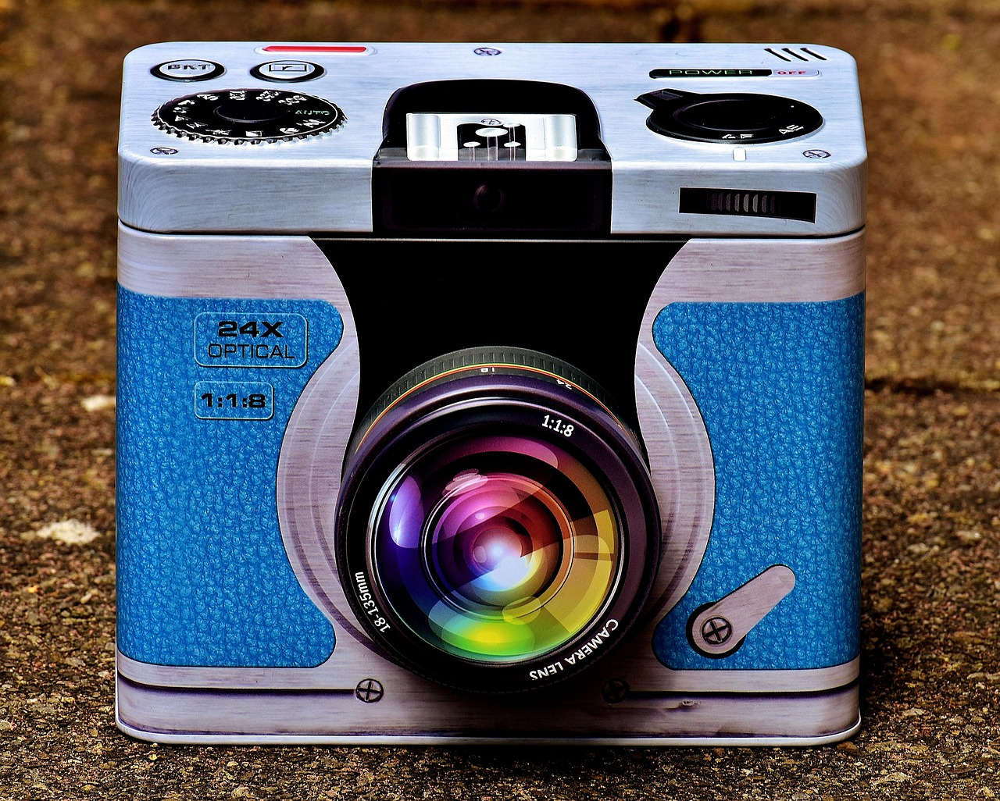

Transform Your Cluttered Library Into a Practical Storage Space: 5 Steps to Success

Photo: Alexas_Fotos / Pixabay
A cluttered bookshelf can become tidy storage in an afternoon. Here are five steps that work, with safety tips for tall shelves.
Step 1: Empty and sort
Take everything off the shelves. Sort into keep, donate or sell, and recycle. Be honest about what you will actually read or use again.
Step 2: Clean the shelves
Dust and wipe each shelf with a slightly damp cloth, then let them dry before putting things back.
Step 3: Group and place
Group items by type: books, papers, decor, supplies. Put the heaviest items on the lower shelves and lighter ones higher. Keep what you use often between waist and shoulder height.
Step 4: Add organizers
Bins, baskets, dividers and bookends turn open shelves into tidy storage. Label each container. Use baskets with lids for small objects and cables.
Step 5: Secure the shelf
A tall bookcase can tip over, especially with children or pets around. Fasten it to a wall stud with an anti-tip strap or bracket supplied with the shelf or sold at hardware stores. Do not overload shelves: respect the maximum load of each one.
Other safety points
- Do not climb on shelves.
- Use a step stool for high shelves.
- Keep the area in front of the shelves clear.
Keep it organized
Once a month, take a few minutes to put things back and remove what you no longer need. For every new item, let one go.
With a little sorting and a few organizers, a cluttered bookcase becomes useful, safe storage.
Recommended products
As an Amazon Associate, I earn from qualifying purchases.